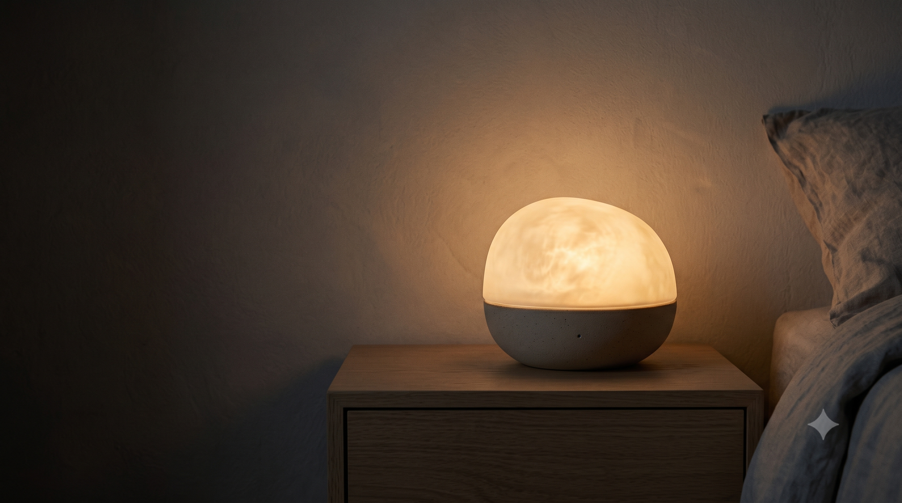
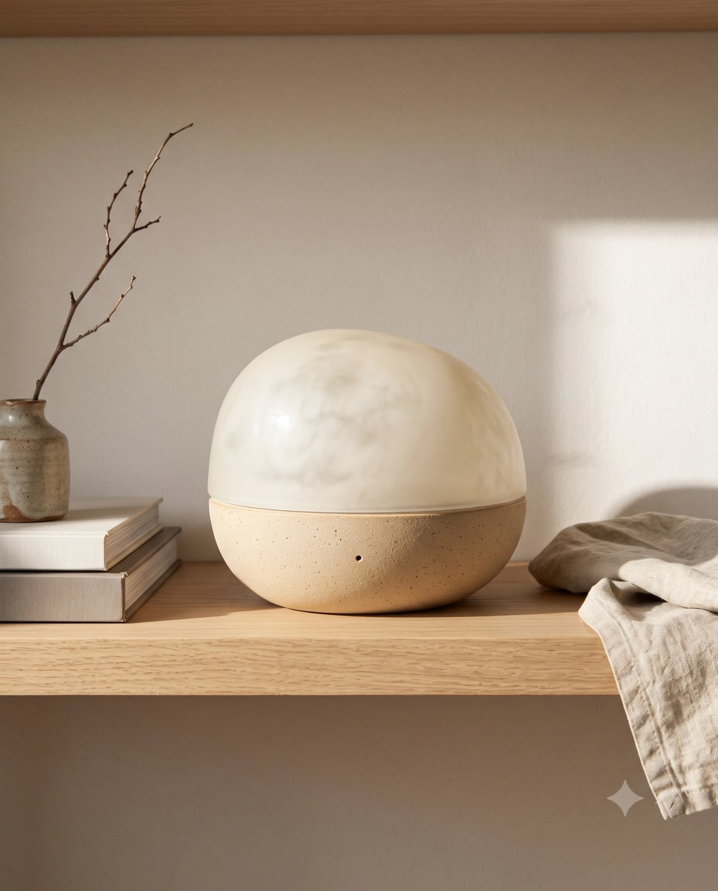
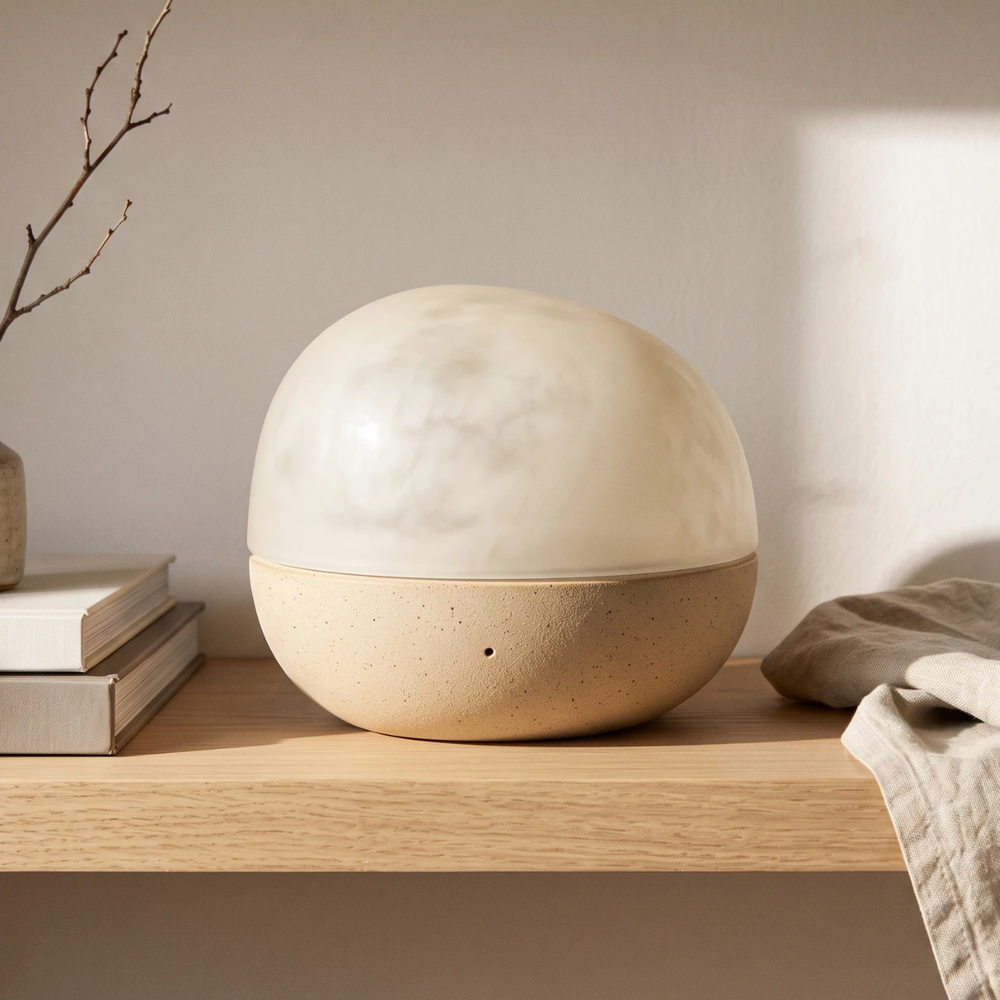
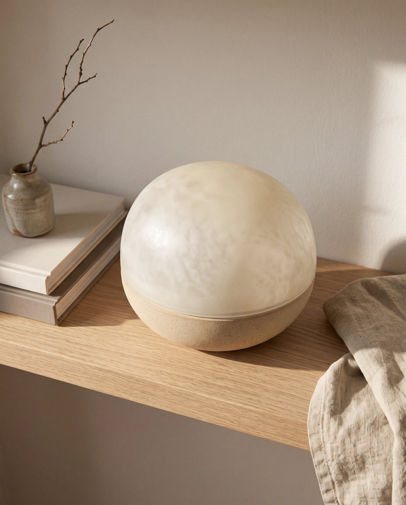
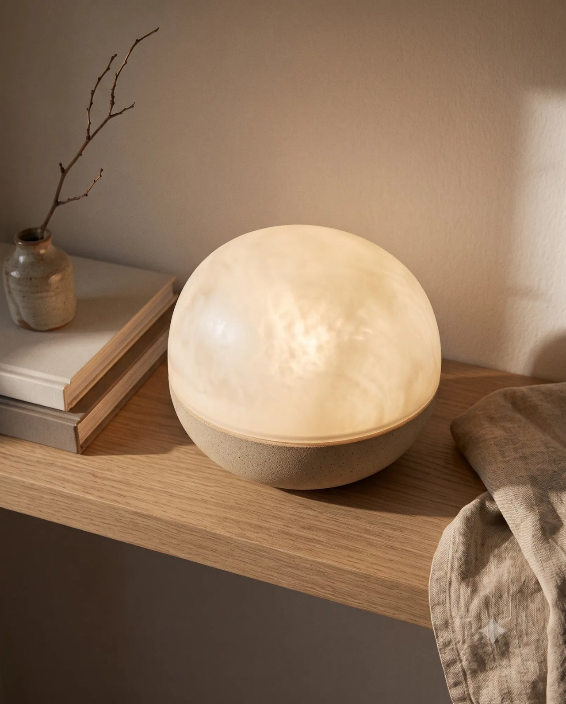
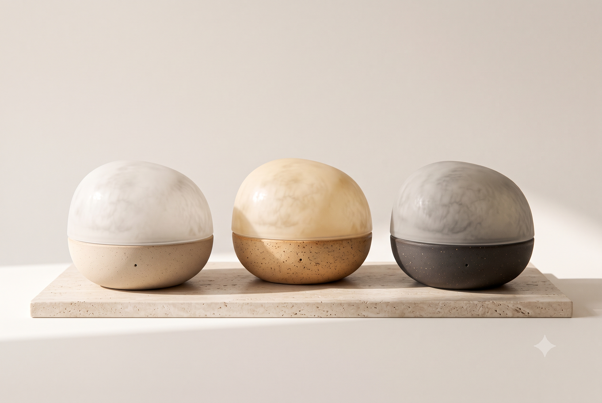

비접촉 수면 감지Contactless sensing
저전력 레이더로 호흡과 뒤척임을 감지해 수면 단계를 판별합니다. 카메라와 마이크는 없습니다.
착용 기기 없이 수면 상태 파악

NOXLUX반투명 유리, 스톤웨어
Nox·Lux
라틴어 Nox(밤)와 Lux(빛)의 합성어
마사지를 받을 때, 향만으로도 몸이 노곤하게 풀리던 순간이 있습니다.
좋은 향과 함께 하루를 시작하던 아침도 있습니다.
NOXLUX는 이 두 경험을 침실로 옮겼습니다. 잠드는 순간부터 일어나는 순간까지, 하나의 오브제로 이어지도록.
at night
향만으로 노곤해지는 마사지의 기억
in the morning
좋은 향과 함께 시작하는 아침
향으로 잠들고, 얕은 잠에서 빛으로 깨웁니다.
알람 07:00 기준, 하룻밤의 다섯 장면입니다.
23:30
빛 은은한 호박색
향 이완 (Drift)
00:10
빛 꺼짐
향 유지 (Deep), 약하게
06:30
빛 꺼짐
향 꺼짐
06:48
빛 서서히 밝게
향 기상 (Bloom)
07:00
빛 최대 밝기
소리 부드러운 소리 알람 추가
설정 시각까지 깨지 않으면, 부드러운 소리 알람이 함께 작동합니다.
저전력 레이더로 호흡과 뒤척임을 감지해 수면 단계를 판별합니다. 카메라와 마이크는 없습니다.
착용 기기 없이 수면 상태 파악
수면 단계에 따라 이완 · 유지 · 기상 향으로 자동 전환합니다.
편안한 잠자리와 개운한 아침을 돕는 향
얕은 잠 구간에 붉은빛에서 흰빛으로, 약 15분간 서서히 밝아집니다.
갑작스러운 알람 없이 자연스러운 기상
카트리지 칩으로 성분을 인식해, 유해 성분은 작동을 차단합니다.
반려동물이 있는 가정에서도 안심
반투명 유리 갓과 손으로 빚은 듯한 스톤웨어 몸체.
강가의 둥근 조약돌을 닮았습니다.





메타분석 12편에서 흡입식 아로마테라피의 수면 관련 효과를 확인했습니다.
Hwang & Shin (2015)
메타분석 30편, 수면의 질에 대한 효과 크기 0.74.
Her & Cho (2021)
라벤더 향에 노출되었을 때 깊은 잠 비율이 증가했습니다.
Goel 외 (2005)
수면 중 향을 제시하자 깊은 잠 관련 뇌파가 강화되었습니다.
Perl 외 (2016)
라벤더 · 캐모마일 · 네롤리 블렌드에서 수면 관련 효과가 가장 크게 나타났습니다.
J Clin Nurs (2025)
수면 단계에 맞춰 향을 제어했을 때, 수면의 질과 다음 날 기분이 나아졌습니다.
MIT Ezzence (2022)
레이더 기반 수면/각성 판별 정확도 87%.
Google Nest Hub (2021)
레이더 기반 수면 단계 판별 정확도 0.74~0.78.
Somnofy (2020)
수면검사 1,022건으로 검증, 전문가 판독에 준하는 성능.
Sleepal AI Lamp (2026)
NOXLUX는 의료기기가 아닙니다. 질환의 진단이나 치료를 목적으로 하지 않으며, 향과 빛으로 수면 환경을 돕는 기기입니다.
Drift by scent,
rise by light.